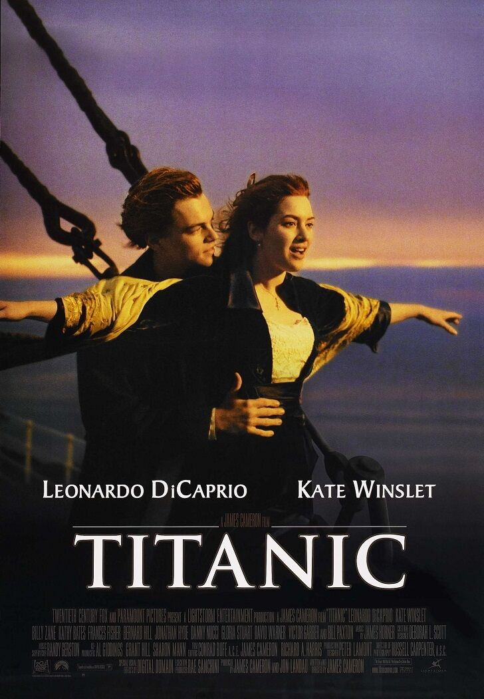

Hello! I am Anvesha, a tech enthusiast from Lucknow. I am pursuing BTech in Data Science from Manipal Institute of Technology. I love creative projects, coding challenges, and writing poetry in my free time.
| Books | Movies |
|---|---|
| You've Reached Sam-Dustin Thao |
Tangled |
| The Da Vinci Code-Dan Brown |
A Thursday |
| The Krishna Key |
Titanic |
| The Woman In The Window |
The Girl On the Train |
Visit my favorite site: OpenAI
It would be easy for me to mention that the chemical formula for water is H2O and Einstein's mass-energy equation is E = mc2. But I would rather tell you a JOKE. Why did the ML model M0 keep getting dumped by M1 and M2? Because overfitting and high loss values are heartbreakers in data science too.(WOMP WOMP)